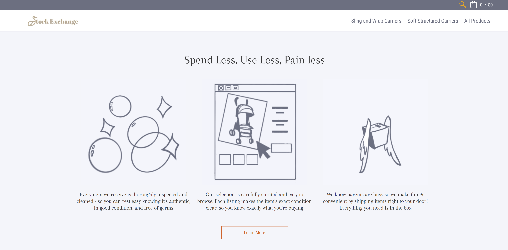
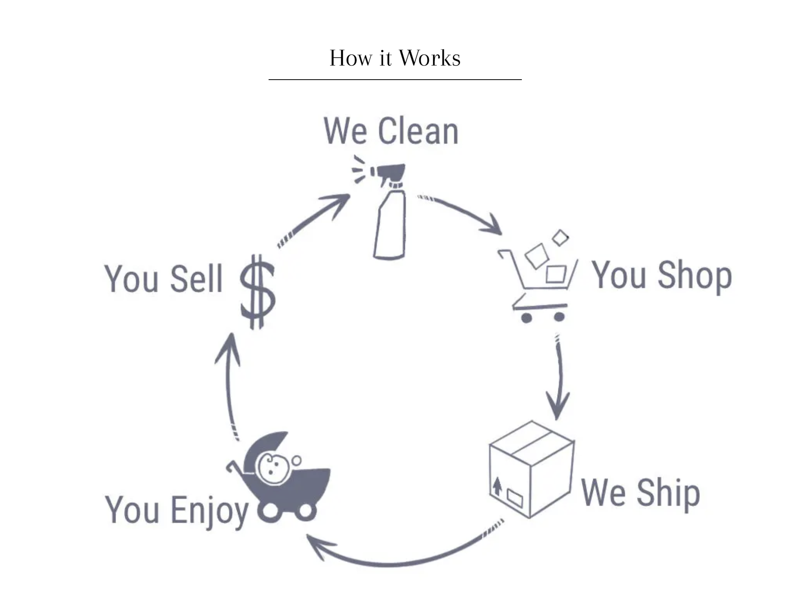
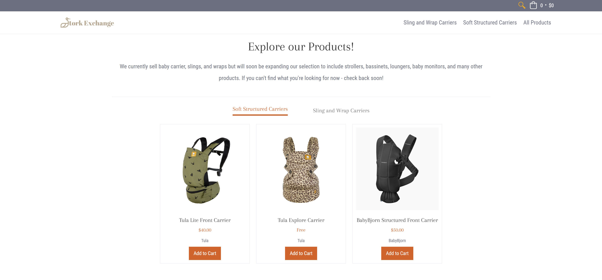
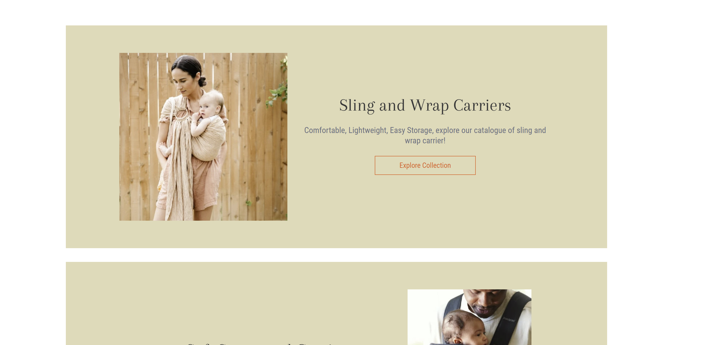
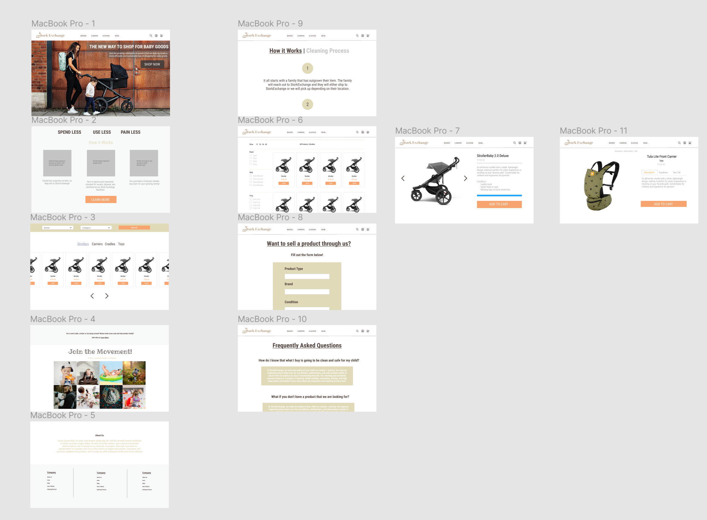
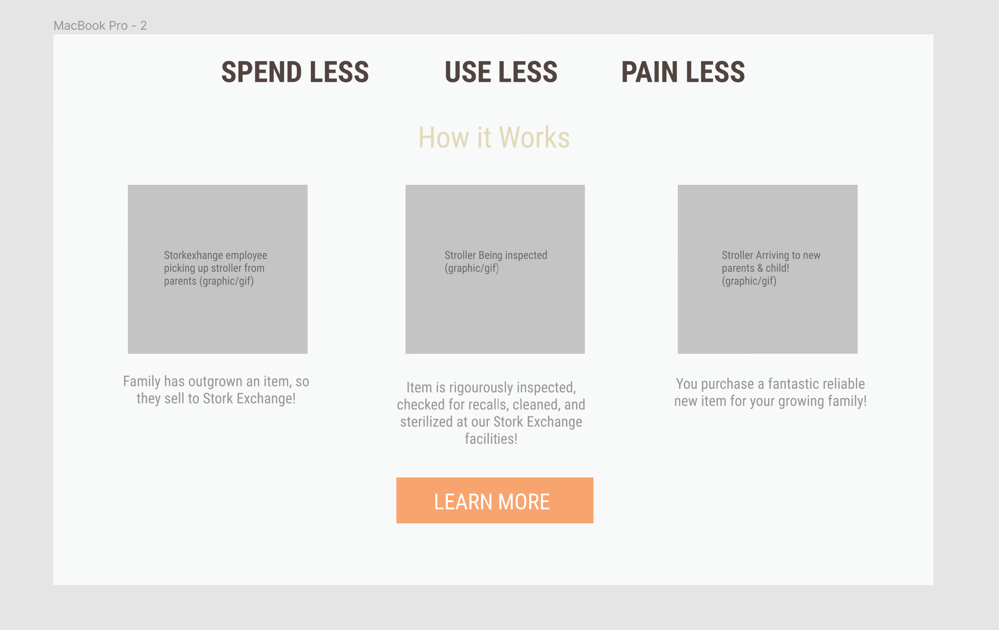
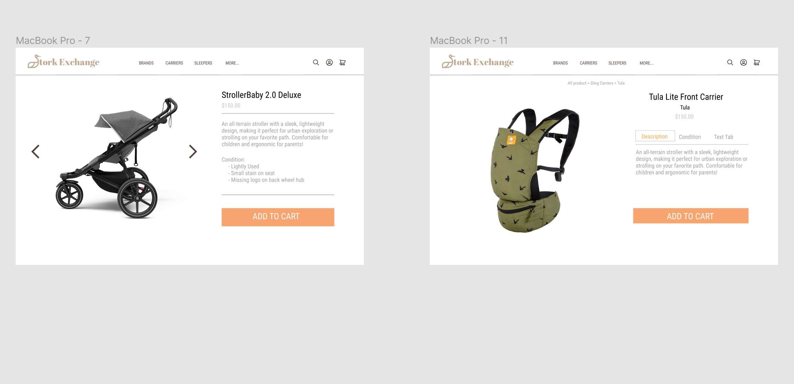
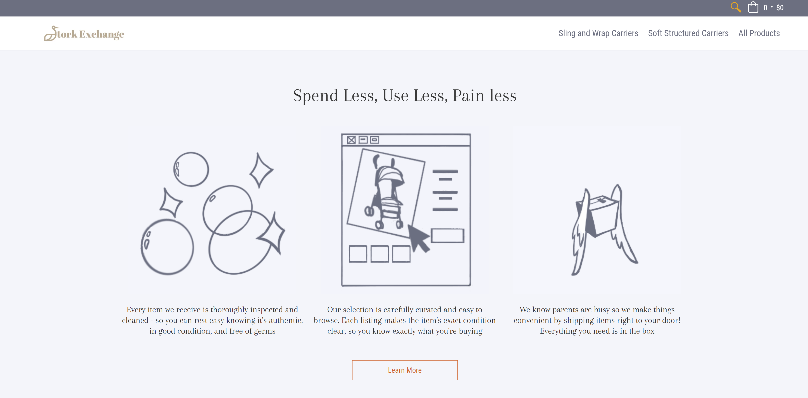
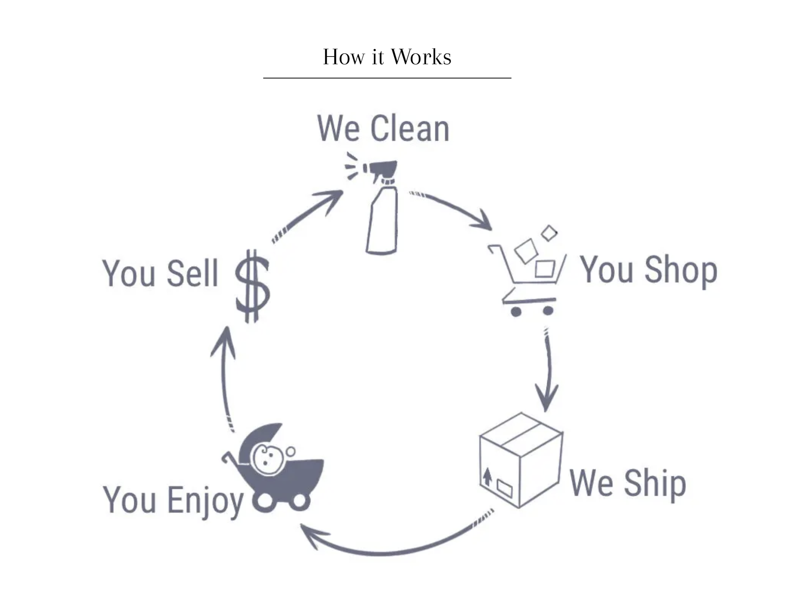
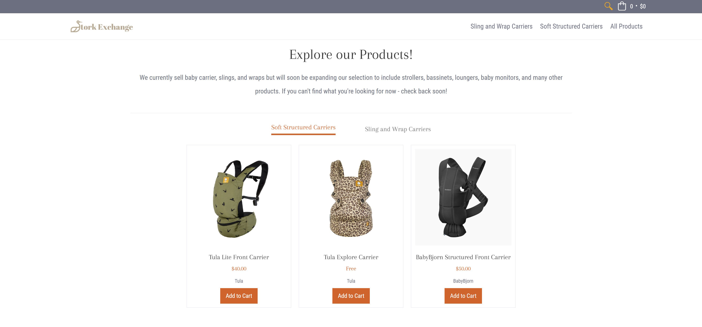
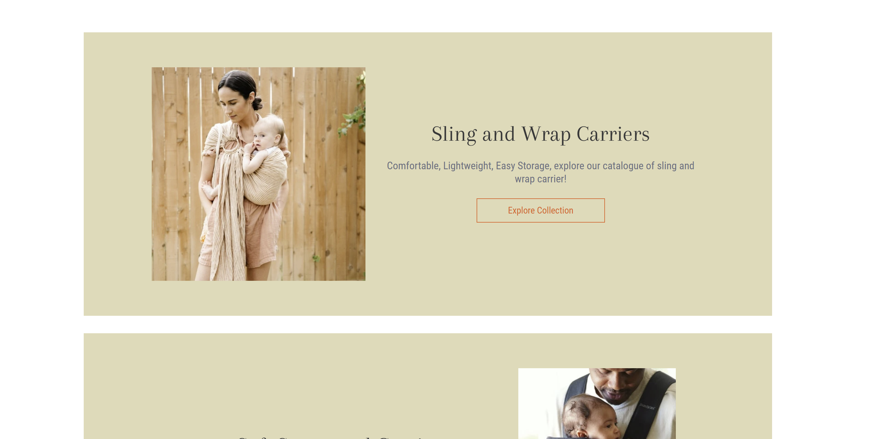
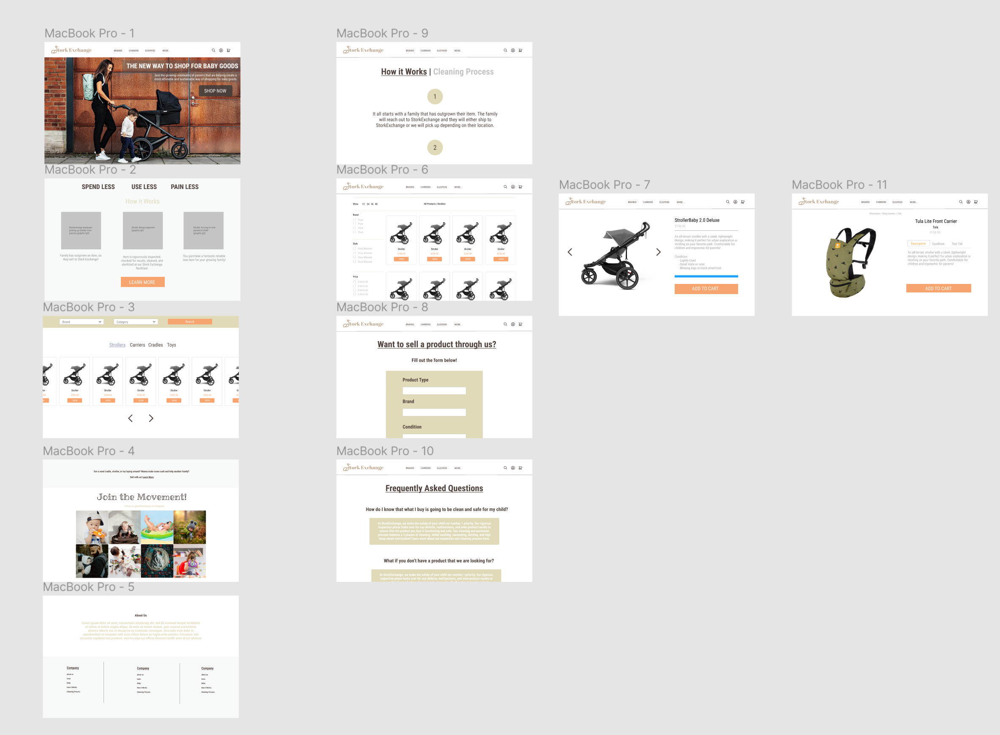
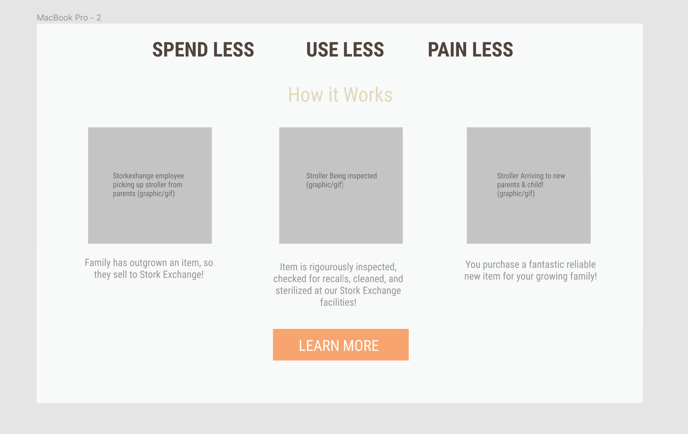
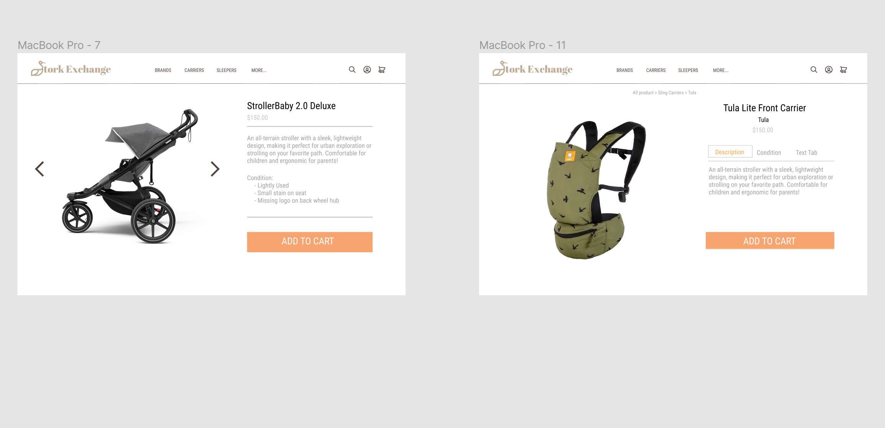

Stork Exchange
Technology: Figma, Shopify, Themekit
Brief: Stork Exchange is a company seeking to empower the parental community by creating a reliable, seamless, and sustainable space where parents can buy and sell used baby goods. My role in this project was to design and build a Shopify Website for Stork Exchange so that they could test their business model and present an MVP to potential investors.
Process: I started off the design process by working directly with the owner to identify a clear value proposition, user base, and must haves like a "how it works" section for the website. From there, I studied other baby good brands like Thule, Baby K'Tan, and ErgoBaby as a form of inspiration and user research so that we could better understand how our users were already accustomed to shopping. Upon identifying key elements and forms, I began designing in Figma and ultimately delivered an approved wireframe for the site.
Next, I moved to construction, where I leveraged Shopify's theme library along with the customization tool, Themekit, in order to make the site a reality. Throughout this entire process, I was in close communication with the client and able to get instant feedback on any design changes, which made development a smooth process. Towards the end of the project, I worked alongside an artist to design three gifs and one infographic. These were key elements which established trust and allowed the user to painlessly and intuitively have their questions answered regarding the Stork Exchange process.
Obstacles: One of the main obstacles that I encountered during this project was making sense out of someone else's code. I had never used Themekit before and quickly learned that some themes may not be documented as well as others. Luckily, the theme developer that we used did have great technical support and they were able to guide me towards the correct files where I could make the necessary changes for our site.
Year: 2020